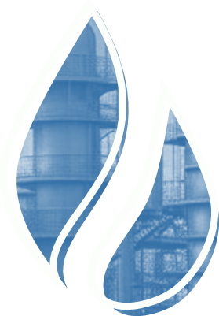

Колонны насадочного типа
На главнуюИзучите материал о насадочных колоннах, классификации насадочных элементов, а также о технологическом процессе эксплуатации насадочных колонн. Чтобы перейти к учебному материалу, кликайте на блоки с текстом
Список рекомендованнойлитературы

- Комиссаров, Ю. А. Основы конструирования и проектирования промышленных аппаратов : учебное пособие / Ю. А. Комиссаров, Л. С. Гордеев, Д. П. Вент. — 2-е изд., испр. и доп. — М. : Издательство Юрайт, 2022. — 368 с. — (Серия : Университеты России). [Электронный ресурс; Режим доступа https:// urait.ru]
- Технология и установки переработки нефти и газа. Свойства нефти и нефтепродуктов: учебное пособие. / Н.Н. Агибалова.- 2-е изд., стер. – Санкт-Петербург: Лань, 2022. – 124с. : ил. -Текст: непосредственный. (Среднее профессиональное образование).
- Элияшевский И. В. Технология добычи и газа. Учебник для техникумов. - М.: Альянс, 2022. - 304 с.
- Агибалова Н. Н. Технология и установки переработки нефти и газа: учебное пособие / Н. Н. Агибалова. — Санкт Петербург: Лань, 2020. — 308 с.: ил. [Электронный ресурс; Режим доступа: http://e.lanbook.com]
- Химико-технологические процессы: учебник и практикум / Ю. А. Комиссаров, М. Б. Глебов, Л. С. Гордеев, Д. П. Вент. — 2-е изд., испр. и доп. — М. : Издательство Юрайт, 2022. — 340 с. — (Серия : Бакалавр. Академический курс) [Электронный ресурс; Режим доступа https:// urait.ru]
- Комиссаров, Ю. А. Процессы и аппараты химической технологии. В 5 ч. Часть 1 / Ю. А. Комиссаров, Л. С. Гордеев, Д. П. Вент. — 2-е изд., перераб. и доп. — М. : Издательство Юрайт, 2022. — 216 с. — (Серия : Бакалавр. Академический курс) [Электронный ресурс; Режим доступа https:// urait.ru]
- Комиссаров, Ю. А. Процессы и аппараты химической технологии. В 5 ч. Часть 2 / Ю. А. Комиссаров, Л. С. Гордеев, Д. П. Вент ; под ред. Ю. А. Комиссаров. — 2-е изд., перераб. и доп. — М. : Издательство Юрайт, 2022. — 227 с. — (Серия : Бакалавр. Академический курс) [Электронный ресурс; Режим доступа https:// urait.ru]
- Комиссаров, Ю. А. Процессы и аппараты химической технологии. В 5 ч. Часть 3 / Ю. А. Комиссаров, Л. С. Гордеев, Д. П. Вент ; под ред. Ю. А. Комиссаров. — 2-е изд., перераб. и доп. — М. : Издательство Юрайт, 2022. — 246 с. — (Серия : Бакалавр. Академический курс) [Электронный ресурс; Режим доступа https:// urait.ru]
- Комиссаров, Ю. А. Процессы и аппараты химической технологии. В 5 ч. Часть 4 / Ю. А. Комиссаров, Л. С. Гордеев, Д. П. Вент ; под ред. Ю. А. Комиссаров. — 2-е изд., перераб. и доп. — М. : Издательство Юрайт, 2022. — 323 с. — (Серия : Бакалавр. Академический курс) [Электронный ресурс; Режим доступа https:// urait.ru]
- Комиссаров, Ю. А. Процессы и аппараты химической технологии. В 5 ч. Часть 5 / Ю. А. Комиссаров, Л. С. Гордеев, Д. П. Вент ; под ред. Ю. А. Комиссаров. — 2-е изд., перераб. и доп. — М. : Издательство Юрайт, 2022. — 208 с. — (Серия : Бакалавр. Академический курс) [Электронный ресурс; Режим доступа https:// urait.ru]